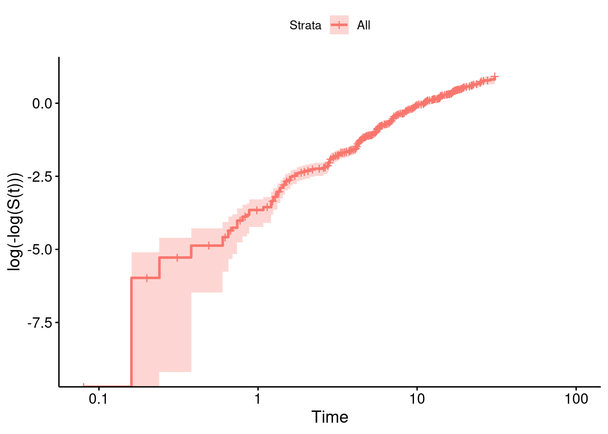
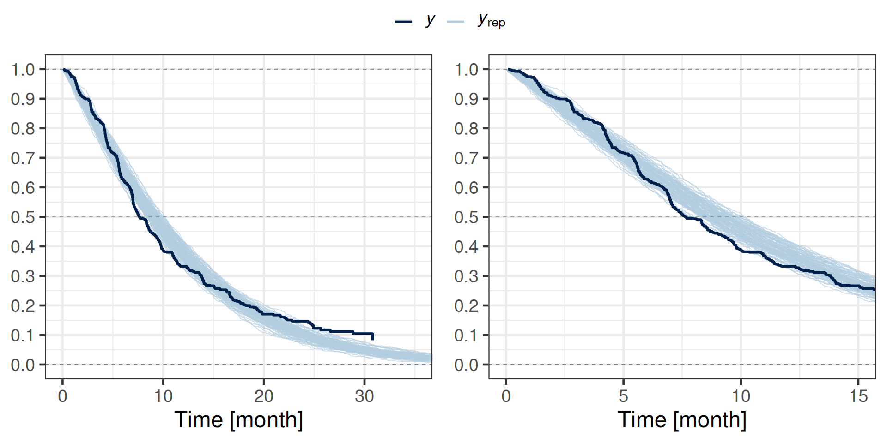

library(ggplot2)
library(dplyr)
library(tidyr)
library(brms)
library(survival)
library(knitr)
library(posterior)
library(bayesplot)
library(simsurv)
library(RBesT)
library(survminer)
library(gt)
here::i_am("src/02i_time_to_event.qmd")
# instruct brms to use cmdstanr as backend and cache all Stan binaries
options(brms.backend="cmdstanr", cmdstanr_write_stan_file_dir=here::here("_brms-cache"))
# create cache directory if not yet available
dir.create(here::here("_brms-cache"), FALSE)
# allow for wider printouts without line-breaking
options(width=120)16 Time-to-event data
In this case study the design of a time-to-event trial is presented. The trial evaluates a combination treatment of an active drug given in addition to standard of care (SoC) therapy. Two SoC therapies are in clinical use, which varies geographically. The SoC therapies alone are used as control and compared to the combination of the active drug given in addition to the respective SoC. This results in four arms of the trial and special emphasis is put on the parametrization of the problem. That is, the treatment effect (and each standard of care) is anticipated to be similar to one another such that the mean treatment effect is of particular interest. In addition, a historical data set is incorporated in the analysis of the trial.
This case study demonstrates:
- modeling censored time-to-event data in
brms(use ofcensformula modifier) with borrowing from historical control data, - the use of custom contrasts allowing for custom definition of the model parametrization, which in turn allows to specify priors on relevant bits of the problem (a priori we expect the treatment effect not to differ substantially between standard of cares),
- an additional alternative approaches of using custom coded contrasts to include with greater flexibility historical data.
To run the R code of this section please ensure to load these libraries and options first:
16.1 Background
The outcome of interest in clinical trials is often the occurence of an event. Such events might be negative for patients such as a worsening of a disease, hospitalization or death. They might also be a positive such as clearing the blood of malaria parasites, or being released from hospital.
We use time-to-event (or survival) analysis when it is important to patients whether the event of interest occurs earlier or later. Additionally, time-to-event methods let us deal with the fact that not all patients will have the event of interest during a trial, which leads to censored observations.
In this case study we focus on an Oncology late phase trial evaluating a test treatment in combination with standard of care (SoC) using progression free survival as endpoint in the indication of gastric cancer. Due to geographic differences in the SoC, two different SoC treatments are considered as control treatments. One active treatment is tested in combination with each SoC and compared to the control treatment using only the SoC, which leads to four trial arms in total. From clinical experience with the two SoCs on expects a similar PFS for both therapies. In addition, it is expected that the treatment effect of the active drug is similar when combined with each SoC respectivley. It is therefore desirable to express this prior knowledge when setting up the model.
By way of aligning the parametrization of the model we can encode the prior knowledge on expected similarities (no difference between the two SoCs and consistent treatment effect). For example, defining the average treatment effect and the difference between the two treatment effects as parameters, one can place a prior with limited width on the difference parameter. This expresses the a-priori expectation that differences in the treatment effect per SoC are not too large. This results in efficency gains for the estimation of the average treatment effect while only partially pooling the data.
As furthermore historical data is available on each SoC treatment, its use may allow for un-equal randomization between active and control arms. However, the available literature data only reports outcomes for a treatment arm which lumps together data from the two SoC treatments. Since about 50% of these patients were treated with either SoC, the reported data can be considered to report the average effect of both SoCs. How this historical data can be included in the analysis is outlined below.
16.2 Modeling time-to-event data with brms
Modeling time to event data of clinical trials is oftentimes run with the semi-parametric Cox proportional hazards model. This model avoids the need to specify a hazard function \(h(t)\), which is the rate of events provided no event as happened yet and it crucially defines the probability density of the survival times. Using the assumption of proportional hazards allows to quantify effects of explanatory variables on the hazard and thereby one can quantify the difference between two treatment groups in a trial, for example. The hazard for a patient \(i\) with covariates \(x_i\) is often modelled as \(h_i(t) =
\exp\{x_i \, \beta\} \, h_0(t)\). The baseline hazard function \(h_0(t)\) is not required in the estimation of the effects \(\beta\) and the Cox model parameters are estimated using a partial likelihood approach. However, as the Bayesian framework is based on the (full) likelihood principle, the semi-parametric Cox proportional hazards model is not applicale. Nonetheless, brms does offer a variant of the Cox proportional hazards model, which is designed to result in numerically very similar results if used with non-informative priors when compared to the respective Cox proportional hazards model. Instead of marginalizing out the baseline hazard function \(h_0(t)\), the baseline hazard function is modelled using an almost non-parametric approach based on a parametric spline approximation to \(h_0(t)\). The estimated regression coefficients \(\beta\) for the Cox brms family correspond to logarithmic hazard ratios.
In contrast to the semi-parametric Cox model, parametric modeling of time to event data assumes a functional form for the hazard function \(h(t)\) or equivalently for the probability density function \(f(t)\) of the event times at \(t=T\). Both functions are related to one another by the basic relationship \(h(t) = \frac{f(t)}{S(t)}\), where \(S(t) = P(T>t) =
\int_t^\infty f(u)\, du\) is the survivor function (probability that an event occurs past time \(t\)). In brms the convention is to define via the family argument to brm the probability density of the event times. A description of the parametrization for these densities are found in the vignette “Parametrization of Response Distributions in brms”.
In this case study the Weibull distribution is used as literature data suggested its appropiateness and a parametric modeling approach may lead to greater statistical efficiency. The Weibull probability density is parametrized in brms in terms of shape \(\alpha\) and scale parameter \(s\). Instead of directly modeling the scale \(s\) (as done in many other time to event programs), brms models the mean of the Weibull distribution \(\mu\). Therefore, the scale \(s\) is set equal to \(s=\frac{\mu}{\Gamma(1 + \frac{1}{\alpha})}\) in the Weibull probability density
\[ f_{\mbox{Weibull}}(t) = \frac{\alpha}{s} \left( \frac{t}{s} \right)^{\alpha-1} \, \exp\left(-\left(\frac{t}{s}\right)^\alpha\right).\]
In this form, the model fulfills the property of an accelerated failure time (AFT) model whenever explanatory variables are introduced. This follows from considering the survivor function
\[S_{\mbox{Weibull}}(t) = \exp\left(-\left(\frac{t}{s}\right)^\alpha\right)\]
and modeling the mean \(\mu_i\) linearly on the \(\log\) scale as a function of covariates \(x_i\) for subject \(i\), \(\log(\mu_i) = \beta_0 + x_i' \, \beta\). Defining as the reference covariate level \(x_i = 0\) motivates the definition of a reference survivor function \(S_{\mbox{Weibull},0}(t)\) for which the linear predictor \(\log(\mu_0)\) is equal to the intercept \(\beta_0\). As a consequence, the survivor function of any patient \(i\) is related to the reference survivor function by
\[ S_{i}(t) = S_{\mbox{Weibull},0}\left(\frac{t}{\exp(x_i' \, \beta)} \right),\]
which is the defining property of AFT models. The regression coefficients \(\beta\) are then interpretable as relative speedup/slowdown of the process progression. That is, an increased time scale (slowdown) leads to a delay of an event. Given that modeling the scale of the Weibull distribution is a common convention (instead of the mean \(\mu\) as in brms), it is useful to recall that this merely means that we need to offset the intercept as estimated by brms with \(-\log\Gamma\left(1 + \frac{1}{\alpha} \right)\) in order to obtain the scale on the log scale, \(\log(s)\) (which is the what the survival R package would report with its survreg routine). The survival R package does futhermore use a log-linear representation of the statistical problem leading to an estimation of the inverse shape parameter \(\sigma=\frac{1}{\alpha}\).
The Weibull AFT model as estimated by brms can be converted into the respective proportional hazard model by transforming the scale \(s\) with the relation \(s = \lambda^{-\frac{1}{\alpha}}\) to an alternative scale parameter \(\lambda\). Doing so casts the hazard function into
\[h_{\mbox{Weibull}}(t) = \lambda \, \alpha \, t^{\alpha-1}.\]
When we now model \(\lambda\) as a function of covariates \(x_i\) linearly on the \(\log\) scale one arrives at
\[ h_i(t) = \exp(x_i' \, \xi) \, h_{\mbox{Weibull},0}(t),\]
where \(h_{\mbox{Weibull},0}(t)\) is defined by the reference covariate level \(x_i=0\) such that \(\lambda = \exp(\xi_0)\) for \(h_{\mbox{Weibull},0}(t)\). To now convert the AFT regression coefficients \(\beta\) as estimated by brms to their respective proportional hazard coefficients \(\xi\) one may just apply the transformation resulting in the relationship
\[\xi = -\alpha \, \beta,\]
which converts from logarithmic speedup/slowdown \(\beta\) (AFT model) into logarithmic hazard ratios \(\xi\) (proportional hazard model).
16.3 Data
We demonstrate here the trial analysis using a fake data simulation of the trial design. As key modeling choices for the parametric modeling approach are motivated from the historical data we start with the presentation of the historical data set and then describe the details of the trial simulation.
16.3.1 Historical data
The CheckMate 649 trial (Janjigian et al. 2021) included 789 gastric cancer patients which were treated with either chemoA or chemoB and their progression free survival (PFS) was reported. Both chemotherapies were used in a roughly 1:1 ratio such that we will consider the reported data as “average” between both chemo therapies (despite lack of randomization occured wrt to chemotherapy assignment).
The data of trial has here been reconstructed from the published survival curves:
NULLTo now evaluate if the Weibull probability density function is an appropiate choice for this data we consider if the non-parametric estimate of the survivor function is compatible with properties of Weibull distributed event times. Specifically, if we transform the survivor function \(S_{\mbox{Weibull}}(t)\) of the Weibull probability density function with the complementary log-log transformation, we obtain that
\[ \mbox{cloglog}(S_{\mbox{Weibull}}(t)) = \log( - \log(S_{\mbox{Weibull}}(t))) = -\alpha \, \log(s) + \alpha \, \log(t)\]
holds. Therefore, we can visualize an estimate of the survivor function on a transformed scale as a function of \(\log(t)\) and we should observe a straight line with slope \(\alpha\) and intercept \(-\alpha \, \log(s)\):
km <- survfit(Surv(time, status) ~ 1, data=hdata2)
ggsurvplot(km, data=hdata2, fun = "cloglog")
While the line is not perfectly straight over the entire follow-up, the assumption of a straight line within the time period including the bulk of all events falls in the range of a good approximation with a line (as can be seen from the numbers at risk of the plot above).
As an additional evaluation of the Weibull distributional form we model the CheckMate 649 data via brms and perform a posterior predictive check. The priors are specified as illustrated in the later section on the used priors. The result looks reasonable.
model_weibull_hist <- bf(time | cens(1-status) ~ 1, family=weibull(), center=FALSE)
prior_weibull_hist <- prior(normal(log(6), log(4)/1.64), coef=Intercept) +
prior(gamma(3, 2.7), class=shape)
fit_hist_checkmate <- brm(model_weibull_hist,
data=hdata2,
prior=prior_weibull_hist,
seed=234235,
refresh=0)Running MCMC with 4 sequential chains...
Chain 1 finished in 1.0 seconds.
Chain 2 finished in 0.9 seconds.
Chain 3 finished in 0.9 seconds.
Chain 4 finished in 0.8 seconds.
All 4 chains finished successfully.
Mean chain execution time: 0.9 seconds.
Total execution time: 4.2 seconds.fit_hist_checkmate Family: weibull
Links: mu = log
Formula: time | cens(1 - status) ~ 1
Data: hdata2 (Number of observations: 789)
Draws: 4 chains, each with iter = 2000; warmup = 1000; thin = 1;
total post-warmup draws = 4000
Regression Coefficients:
Estimate Est.Error l-95% CI u-95% CI Rhat Bulk_ESS Tail_ESS
Intercept 2.44 0.04 2.37 2.51 1.00 2911 2563
Further Distributional Parameters:
Estimate Est.Error l-95% CI u-95% CI Rhat Bulk_ESS Tail_ESS
shape 1.22 0.04 1.15 1.30 1.00 2787 2417
Draws were sampled using sample(hmc). For each parameter, Bulk_ESS
and Tail_ESS are effective sample size measures, and Rhat is the potential
scale reduction factor on split chains (at convergence, Rhat = 1).With the posterior we can now perform a posterior predictive check. We do so by drawing 100 samples of the model parameters from the posterior and draw for each sample a realization of the event times for all patients. Hence, for each sample one obtains a fake data set simulated according to the Weibull distribution. Finally, each fake data set is summarized by a Kaplan-Meier estimate and drawn in light color while the actually observed data is summarized in the same way and drawn using a thick line. If the fitted model is appropiate, then the observed Kaplan Meier estimate should look just like a random realization among the many fake data generated ones. However, we observe that over the entire follow-up time the observed data is leaving for late follow-up times the bulk of the fake data generated Kaplan Meier curves. This may suggest a deviation from the Weibull distribution or the possibility that time-varying covariates are helpful. Nonetheless, if one focusses on the follow-up time frame, which includes the majoritiy of events (up to 15 month), then the posterior predictive check does look reasonable. This is why we use the Weibull distribution without a time-varying covariate for simplicity.
p_full_fup <- pp_check(fit_hist_checkmate, type = "km_overlay", ndraws = 100) +
scale_y_continuous(breaks = seq(0, 1, by = 0.1)) +
xlab("Time [month]") +
coord_cartesian(xlim = c(0, 35))
p_sub_fup <- p_full_fup + coord_cartesian(xlim = c(0, 15))
ggpubr::ggarrange(p_full_fup, p_sub_fup, common.legend = TRUE)Warning: Using `size` aesthetic for lines was deprecated in ggplot2 3.4.0.
ℹ Please use `linewidth` instead.
ℹ The deprecated feature was likely used in the bayesplot package.
Please report the issue at <https://github.com/stan-dev/bayesplot/issues/>.
Note that the above predictive check does not simulate the censoring process. Thus, the censoring process is ignored and non-informative censoring is thereby assumed.
16.3.2 Trial simulation
Here we consider a fake data simulation of the trial of interest evaluating a novel treatment of gastric cancer for which an established treatment is available already. The trial is a randomized trial to study the efficacy and safety of adding a drug CompoundX in combination with a monoclonal antibody mAb + standard of care (SoC). Two chemotherapy backbones, ChemoA and ChemoB were used as SoC. There are in total four treatment arms including two control groups, which are mAb+ChemoA (controlChemoA) and mAb+ChemoB (controlChemoB), and two corresponding active arms with the test treatment administrated in addition, that is CompoundX+mAb+ChemoA (activeChemoA), CompoundX+mAb+ChemoB (activeChemoB).
Synthetic data were generated for the randomised study. We let the sample size of both active and control group be 100, respectively. The sample size has been chosen to ensure adequate trial power of 80%. Efficacy was assessed using progression-free survival (PFS) measured in units of months. For patients not experiencing a progression event at the time of the analysis, their event time will be right censored at the time of their last valid tumor assessment. For patients experiencing an event, their event time will be interval censored, with the upper limit of the interval being the study day on which the progression event is observed, and the lower limit being the day of the last preceding valid tumor assessment at which the patient’s progression-free status was confirmed. While interval censoring is a supported feature of brms, this case study will for simplicity use the actual event times and leave it to the reader to explore interval censoring with brms.
There are two historical datasets available. The first one with 400 patients on a control arm, mAb+ChemoA (controlChemoA), is simulated together with the randomised study. And the PFS data of 789 patients receiving first-line programmed cell death (PD-1) inhibitor+chemotherapy are available from a randomised, open-label, phase 3 trial, CheckMate 649 (Janjigian et al. 2021), and it will be introduced later. These data are highly relevant and we would like to integrate the historical information into our analysis.
Simulated data will be generated using simsurv function via simulating survival times from the Weibull model using the proportional hazard form of the model. We assumed a 20% hazard rate (HR) reduction due to active treatment administration (CompoundX) to the active group in comparison to the control group and a 5% difference in HR for the two chemotherapy SoCs (ChemoB is 5% worse than ChemoA on the hazard scale). We also assumed that both of the historical data have a 2% worse outcome on the hazards scale and we represent the two studies with hist1 and hist2 respectively (hist1 for simulated historidal data and hist2 for CheckMate 649).
Show the code
set.seed(46767)
# n per group
n_grp <- 100
n_hist <- 400
# use month as time-unit
rate_1 <- 1 / 6
rate_cens <- 1 / 10
beta <- c(
trt = -0.2, ## roughly 20% HR reduction
soc_alt = 0.05, ## alternative chemotherapy is 5% worse
hist1 = 0.02
) ## simulated historical data has a 2% worse outcome
# covariates of simulated trial data
covs <- data.frame(
id = seq(1, 2 * n_grp),
trt = c(0L, 1L),
soc_alt = rbinom(2 * n_grp, 1L, 0.3),
hist1 = 0L,
hist2 = 0L
)
# covariates of historical data
hcovs <- data.frame(
id = seq(2 * n_grp + 1, 2 * n_grp + 1 + n_hist - 1),
trt = c(0),
soc_alt = 0,
hist1 = 1L,
hist2 = 0L
)
simulate_trial <- function(lambda, gamma, lambda_cens, x, betas) {
## simulate censoring times, note that we do not simulate end of
## trial with maxt for now. Also note the different parametrization of
## simsurv which models log(shape) with a linear predictor.
cens <- simsurv(lambdas = lambda_cens, gammas = 1, x = x)
events <- simsurv(lambdas = lambda, gammas = gamma, x = x, betas = betas)
names(cens) <- paste0(names(cens), "_cens")
bind_cols(events, select(cens, -id_cens), select(x, -id)) |>
rename(censtime = eventtime_cens) |>
mutate(
event = 1L * (eventtime <= censtime),
y = if_else(event == 1, eventtime, censtime),
status = NULL,
status_cens = NULL
) |>
relocate(id, y, event) |>
mutate(
soc = factor(soc_alt, c(0, 1), c("ChemoA", "ChemoB")),
trt_ind = trt,
trt = factor(trt_ind, c(0, 1), c("control", "active")),
arm = factor(
paste0(c("control", "active")[trt_ind + 1], soc),
levels = c(
"activeChemoA",
"controlChemoA",
"activeChemoB",
"controlChemoB"
)
)
)
}
# using shape=1 for simulation (corresponding to exponential survival times)
sim <- simulate_trial(rate_1, 1, rate_cens, covs, beta)
hdata1 <- simulate_trial(rate_1, 1, rate_cens, hcovs, beta) |>
mutate(id = id + max(sim$id))We can check how the simulated data looks like and its sample size.
gt_preview(sim) |> fmt_number(where(is.double), decimals=1)| id | y | event | eventtime | censtime | trt | soc_alt | hist1 | hist2 | soc | trt_ind | arm | |
|---|---|---|---|---|---|---|---|---|---|---|---|---|
| 1 | 1 | 7.7 | 0 | 12.3 | 7.7 | control | 0 | 0 | 0 | ChemoA | 0 | controlChemoA |
| 2 | 2 | 0.1 | 0 | 20.4 | 0.1 | active | 0 | 0 | 0 | ChemoA | 1 | activeChemoA |
| 3 | 3 | 4.7 | 0 | 10.3 | 4.7 | control | 0 | 0 | 0 | ChemoA | 0 | controlChemoA |
| 4 | 4 | 2.7 | 0 | 19.0 | 2.7 | active | 0 | 0 | 0 | ChemoA | 1 | activeChemoA |
| 5 | 5 | 3.6 | 1 | 3.6 | 7.5 | control | 0 | 0 | 0 | ChemoA | 0 | controlChemoA |
| 6..199 | ||||||||||||
| 200 | 200 | 11.8 | 0 | 17.1 | 11.8 | active | 0 | 0 | 0 | ChemoA | 1 | activeChemoA |
table(sim$arm)
activeChemoA controlChemoA activeChemoB controlChemoB
72 73 28 27 table(hdata1$arm)
activeChemoA controlChemoA activeChemoB controlChemoB
0 400 0 0 16.4 Models
16.4.1 Model specification
Survival data will be fitted by a Bayesian generalized linear model.
The survival function follows a Weibull distribution with shape parameter \(\alpha\) and scale parameter \(s\),
\[T|\alpha,s \sim f_{\mbox{Weibull}}(T).\]
A common shape parameter \(\alpha\) is assumed for all treatment arms, with the scale parameter allowed to vary by treatment arm. In place of directly modeling the scale parameter \(s\), the mean of the Weibull distribution is modelled on the logarithmic scale such that the scale is set to \(s = \frac{\mu}{\Gamma(1 + \frac{1}{\alpha})}\) and \(\log(\mu)\) is modelled as a linear function of the covariates. We use \(\lambda_{\mbox{activeChemoA}}\) to represent the logarithm of the mean survival time for patients receiving CompoundX+mAb+ChemoA (\(\lambda_{\mbox{activeChemoA}} = \log(\mu_{\mbox{activeChemoA}})\)), and \(\lambda_{\mbox{controlChemoA}}\) for patients receiving mAb+ChemoA. We define \(\lambda_{\mbox{activeChemoB}}\) and \(\lambda_{\mbox{controlChemoB}}\) similarly for patients receiving the ChemoB chemotherapy backbone.
With 4 different patient groups we may define 4 parameters in total. The default parametrization in R for categorical variables is the treatment contrast representation. This representation delcares a reference category to form the overall intercept and defines differences to the overall intercept for each categorical level. As this does automatically define the parametrization of the model, we here define the contrasts in a customized manner. Doing so ensures that we control directly the exact parametrization of the model. This is important in this problem as we can then setup priors in a tailored manner. More details in defining custom contrasts are explained by Ben Bolker here.
In addition to the overall mean (global intercept)
\[\gamma = \frac{1}{4}( \lambda_{\mbox{activeChemoA}} + \lambda_{\mbox{controlChemoA}} + \lambda_{\mbox{activeChemoB}} + \lambda_{\mbox{controlChemoB}} ), \]
we define for the four groups the following contrasts of interest:
- Average difference between the active and control arms in each chemotherapy backbone:
\[\delta_{\mbox{EffectAvg}} = \frac{1}{2} { (\lambda_{\mbox{activeChemoA}} - \lambda_{\mbox{controlChemoA}}) + ( \lambda_{\mbox{activeChemoB}} - \lambda_{\mbox{controlChemoB}} ) } \]
- Half of the difference in treatment effect between the two chemotherapy backbones:
\[\delta_{\mbox{effect}} = \frac{1}{2} { (\lambda_{\mbox{activeChemoA}} - \lambda_{\mbox{controlChemoA}}) - ( \lambda_{\mbox{activeChemoB}} - \lambda_{\mbox{controlChemoB}}) }\]
- Difference between the two control arms:
\[\delta_{\mbox{control}} = - \lambda_{\mbox{controlChemoA}} + \lambda_{\mbox{controlChemoB}} \]
To formalize these contrast definitions, we summarize the arms to parameter mapping as matrix:
| Parameter | \(\lambda_{\mbox{activeChemoA}}\) | \(\lambda_{\mbox{controlChemoA}}\) | \(\lambda_{\mbox{activeChemoB}}\) | \(\lambda_{\mbox{controlChemoB}}\) |
|---|---|---|---|---|
| \(\gamma\) | 1/4 | 1/4 | 1/4 | 1/4 |
| \(\delta_{\mbox{EffectAvg}}\) | 1/2 | -1/2 | 1/2 | -1/2 |
| \(\delta_{\mbox{effect}}\) | 1/2 | -1/2 | -1/2 | 1/2 |
| \(\delta_{\mbox{control}}\) | 0 | -1 | 0 | 1 |
In this form it is straightforward to derive the definition of a parameter and how it relates to the strata of the data based on the parameter definitions. However, in order to define the design matrix, which maps parameters to data strata, we will need the inverse of the above matrix. By convention R requires for the specification of custom contrats, the matrix mapping parameters to the data means such that the above matrix is referred to as \(C^{-1}\) in the following.
The linear model for \(\log(\mu)\) is parameterised in terms of the defined contrasts with additional parameters allowing for heterogeneity between data from the two separate historical data strata. For the 4 different treatment arms the linear predictor is then given by:
\[\begin{align} \begin{bmatrix} \lambda_{\mbox{activeChemoA}} \\ \lambda_{\mbox{controlChemoA}} \\ \lambda_{\mbox{activeChemoB}} \\ \lambda_{\mbox{controlChemoB}} \end{bmatrix} &= C \, \begin{bmatrix} \gamma \\ \delta_{\mbox{EffectAvg}} \\ \delta_{\mbox{effect}} \\ \delta_{\mbox{control}} \end{bmatrix} + I_{\mbox{hist1}} \, \beta_{\mbox{hist1}} + I_{\mbox{hist2}} \, \beta_{\mbox{hist2}} \end{align}\]
The indicators \(I_{\mbox{hist1}}\) and \(I_{\mbox{hist2}}\) represent that a patient was in the simulated historical stratum, or in the historical CheckMate 649 stratum, respectively. The corresponding parameters \(\beta_{\mbox{hist1}}\) and \(\beta_{\mbox{hist2}}\) capture differences in outcome between these two historical strata, and patients in our randomised comparison. In order to borrow strength from the historical data, the prior on these two regression coefficients are set reasonably narrow which in effect emulates a random effects meta-analysis.
As the historical data set reported in CheckMate 649 reported the outcome for the control treatment with a mixed population of 50% being on either SoC, we consider this data to report an average SoC effect. Basic algebra shows that \[\frac{1}{2} \, (\lambda_{\mbox{activeChemoA}} + \lambda_{\mbox{activeChemoB}}) = \gamma - \frac{1}{2} \, \delta_{\mbox{effect}}. \] Thus, we may simply add an additional row to the matrix \(C\) such that the full matrix \(C\) is:
| Treament arm | \(\gamma\) | \(\delta_{\mbox{EffectAvg}}\) | \(\delta_{\mbox{effect}}\) | \(\delta_{\mbox{control}}\) |
|---|---|---|---|---|
| activeChemoA | 1 | 1/2 | 1 | -1/2 |
| controlChemoA | 1 | -1/2 | 0 | -1/2 |
| activeChemoB | 1 | 1/2 | -1 | 1/2 |
| controlChemoB | 1 | -1/2 | 0 | 1/2 |
| controlAverage | 1 | -1/2 | 0 | 0 |
16.4.2 Priors
Priors for each random variable are described in the following table.
| Parameter | Prior |
|---|---|
| \(\alpha\) | \(\Gamma(3, 2.7)\) |
| \(\gamma\) | \(\mbox{Normal}( \log(\frac{8}{\log(2)}), \frac{\log(4)}{1.64})\) |
| \(\delta_{\mbox{effectAvg}}\) | \(\mbox{Normal}(0, \frac{\log(2)}{1.64})\) |
| \(\delta_{\mbox{effect}}\) | \(\mbox{Normal}(0, \frac{\log(1.25)}{1.64})\) |
| \(\delta_{\mbox{control}}\) | \(\mbox{Normal}(0, \frac{\log(1.25)}{1.64})\) |
| \(\beta_{\mbox{hist1}}\) | \(\mbox{Normal}(0, \frac{\log(1.8)}{1.64})\) |
| \(\beta_{\mbox{hist2}}\) | \(\mbox{Normal}(0, \frac{\log(1.8)}{1.64})\) |
These priors parametrize the central 90% credible interval for the respective normal priors used. As the parameters are additive on the \(\log\) scale, the standard deviation of \(\log(2)/\Phi^{-1}(95\%) \approx \log(2)/1.64\) defines a 90% credible interval of \([-\log(2), \log(2)]\) and implies on the back-transformed scale a respective interval of \([1/2, 2]\), i.e. a doubling or a halving of the progression speed.
The common shape parameter, \(\alpha\), is set to have median value of unity and it’s 90% credible interval is \([0.3, 2.33]\), which admits substantial deviation from unity, which is the case of an exponential survival time distribution.
The prior for \(\gamma\), the intercept, is set with a mean approximately corresponding to expected median PFS on anti-PD-1 with SoC, as estimated from CheckMate 649 (approx. 8 months). The width of the central 90% credible interval for the intercept prior \(\gamma\) is set to admit for a 4 fold increase or decrease. A priori it is expected that the outcome for controlChemoAand controlChemoB will be similar (Janjijian et al, mPFS by chemotherapy not provided, but mOS was 14 months for both anti-PD1+Chemotherapy backbones (considered as similar to mAb+ChemoA andmAb+ChemoB in our simulated data), hence a prior for \(\delta_{\mbox{control}}\) is centered on 0 with a standard deviation corresponding to a 25% increase or decrease is chosen for the 90% credible interval. Similarly, the treatment benefit from adding CompoundX is expected to be similar for both arms, so the prior for \(\delta_{\mbox{effect}}\) is again centered on 0 with the prior admitting a 25% increase or decrease a priori in terms of the 90% central credible interval. Priors for \(\beta_{\mbox{hist1}}\) and \(\beta_{\mbox{hist2}}\) are centered at a mean of 0, corresponding to no difference in outcome for the two historical studies as compared to this trial’s randomised part, but with the same variance allowing substantial differences between the randomised study and historical data. The use of Student-t priors for these parameters also robustifies against possible data discordance between the randomised comparison and historical data.
These prior definitions provide an uninformative prior, that allows for a broad range of shapes for the survival curve.
16.5 Implementation/Results
16.5.1 Construct customized coded contrasts
First we define customized contrasts which define the parametrization of the model as defined in Section 16.4.1.
The mapping of data strata to parameters is:
cc_inv <- matrix(c(1/4, 1/4, 1/4, 1/4,
1/2, -1/2, 1/2, -1/2,
1/2, -1/2, -1/2, 1/2,
0, -1, 0, 1),
nrow=4, ncol=4, byrow=TRUE,
dimnames=list(contrast=c("intercept", "deltaEffectAvg",
"deltaEffect", "deltaControl"),
arm=c("activeChemoA", "controlChemoA",
"activeChemoB", "controlChemoB")))
MASS::fractions(cc_inv) arm
contrast activeChemoA controlChemoA activeChemoB controlChemoB
intercept 1/4 1/4 1/4 1/4
deltaEffectAvg 1/2 -1/2 1/2 -1/2
deltaEffect 1/2 -1/2 -1/2 1/2
deltaControl 0 -1 0 1 intercept (\(\gamma\)) is the overall mean while deltaControl (\(\delta_{\mbox{control}}\)) is the difference between the two control arms.
By way of defining deltaEffectAvg (\(\delta_{\mbox{EffectAvg}}\)) we obtain the average treatment effect. Setting deltaEffect (\(\delta_{\mbox{effect}}\)) to half of the difference between the two treatment effects one arrives at the following symmetric relations to obtain the chemo therapy specific treatment effect:
\[\delta_{\mbox{EffectAvg}} = \frac{1}{2} \, [ (\lambda_{\mbox{activeChemoA}} - \lambda_{\mbox{controlChemoA}}) + (\lambda_{\mbox{activeChemoB}} - \lambda_{\mbox{controlChemoB}})]\]
\[\delta_{\mbox{effect}} = \frac{1}{2} \, [ (\lambda_{\mbox{activeChemoA}} - \lambda_{\mbox{controlChemoA}}) - (\lambda_{\mbox{activeChemoB}} - \lambda_{\mbox{controlChemoB}})]\]
\[ \Leftrightarrow \delta_{\mbox{effectChemoA}} = \delta_{\mbox{effectAvg}} + \delta_{\mbox{effect}}\]
\[ \Leftrightarrow \delta_{\mbox{effectChemoB}} = \delta_{\mbox{effectAvg}} - \delta_{\mbox{effect}}\]
R requires to define the inverse relationship, i.e. the mapping from parameters to data strata (as needed to define the design matrix). Therefore, the contrast matrix \(C\) is:
cc <- solve(cc_inv)
MASS::fractions(cc) intercept deltaEffectAvg deltaEffect deltaControl
activeChemoA 1 1/2 1 -1/2
controlChemoA 1 -1/2 0 -1/2
activeChemoB 1 1/2 -1 1/2
controlChemoB 1 -1/2 0 1/2 In order to setup custom contrasts of discrete explanatory variables like treatment arms, R requires to define the explanatory variable as factor, which has been defined accordingly in the simulation routine of this case study:
levels(sim$arm)[1] "activeChemoA" "controlChemoA" "activeChemoB" "controlChemoB"As R sets up the overall intercept separatley, we need to drop the overall intercept definition from \(C\) and define the contrast of the factor variable to be equal to the matrix \(C\):
contrasts(sim$arm) <- cc[,-1]Then to check if the contrasts work as expected, we can use a dummy fit to see if things get used correctly and the results here are consistent with our definitions:
lfit1 <- lm(y ~ 1 + arm, sim)
summary(lfit1)
Call:
lm(formula = y ~ 1 + arm, data = sim)
Residuals:
Min 1Q Median 3Q Max
-5.506 -2.909 -1.461 1.261 17.064
Coefficients:
Estimate Std. Error t value Pr(>|t|)
(Intercept) 4.5023 0.3349 13.444 <2e-16 ***
armdeltaEffectAvg 0.9641 0.6698 1.439 0.152
armdeltaEffect -0.4516 0.6698 -0.674 0.501
armdeltaControl 0.6574 0.9526 0.690 0.491
---
Signif. codes: 0 '***' 0.001 '**' 0.01 '*' 0.05 '.' 0.1 ' ' 1
Residual standard error: 4.229 on 196 degrees of freedom
Multiple R-squared: 0.02433, Adjusted R-squared: 0.009398
F-statistic: 1.629 on 3 and 196 DF, p-value: 0.1839We can see that above model specification for lm estimates the parameter coefficient for the three contrasts armdeltaEffectAvg (\(\delta_{\mbox{EffectAvg}}\)), armdeltaEffect (\(\delta_{\mbox{effect}}\)) and armdeltaControl (\(\delta_{\mbox{control}}\)).
16.5.2 Model fit with brms
Now we start with analyzing the simulated randomized study and specify the brms model using a Weibull distribution. In a first version, we do not include the literature historical data which requires the definition of a custom design matrix as will be explained below.
First we define with a call to bf the model formula and model family. This defines the model’s likelihood and the parametrization.
model_weibull <- bf(y | cens(1-event) ~ 1 + arm, family=weibull(), center=FALSE)The left hand side of the formula, y | cens(1-event) ~ ..., denotes with \(y\) the data being modeled - the time variable -, while cens is a response modifier added with a vertical bar| to the left hand side. Here, cens defines which data rows correspond to (right) censored observations. The censoring information is passed into cens by the variable 1-event. The right hand side defines the linear regressor formula used for the mean parameter of the model, which is in this case modeled by default with a \(\log\) link function. The formula 1 + arm defines an overall intercept and the covariate arm (coded as factor in the data) is used with it’s custom constrasts as explanatory variable. Finally, the family argument specifies that the event and censoring times stored in \(y\) are distributed according to a weibull probability density distribution.
With the model (and data) being defined, we are left to specify the priors for the model. With the help of the get_prior function we can report which default priors and parameters were instantiated by brms and hence need an assignment of a prior.
gt(get_prior(model_weibull, sim))| prior | class | coef | group | resp | dpar | nlpar | lb | ub | tag | source |
|---|---|---|---|---|---|---|---|---|---|---|
| b | default | |||||||||
| b | armdeltaControl | default | ||||||||
| b | armdeltaEffect | default | ||||||||
| b | armdeltaEffectAvg | default | ||||||||
| b | Intercept | default | ||||||||
| gamma(0.01, 0.01) | shape | 0 | default |
Here we define the priors with standard deviations stored in variables, which are passed as stanvars to the brms model. Doing so allows to change the prior quickly, since the Stan model as generated by brms remains unchanged whenever the standard deviation of a prior is changed. A priori it is expected that the outcome for the two control groups will be similar, so the prior on deltaControl (\(\delta_{\mbox{control}}\)) is centered on \(0\). The same is a priori assumed for the deltaEffect (\(\delta_{\mbox{effect}}\)) parameter.
model_weibull_prior <-
prior(normal(meanInter, log(4)/1.64), coef=Intercept) +
prior(normal(0, sdEffectAvg), coef=armdeltaEffectAvg) +
prior(normal(0, sdDeltaEffect), coef=armdeltaEffect) +
prior(normal(0, sdDeltaControl), coef=armdeltaControl) +
prior(gamma(3, 2.7), class=shape)The prior for the intercept, \(\gamma\), is set to a mean approximately corresponding to an expected median PFS on anti-PD-1 + SoC, as estimated from CheckMate 649 (here 8 month)
prior_mean <- stanvar(log(8/log(2)), "meanInter")The standard deviations are setup with reference to a \(90 \%\) credible interval. Hence, \(log(2)/1.64\) for the standard deviation of the prior for deltaEffectAvg (\(\delta_{\mbox{effectAvg}}\)) means that the event process can increase/decrease in progression speed by a factor of \(2\) at most.
prior_sd <- stanvar(log(2)/1.64, "sdEffectAvg") +
stanvar(log(1.25)/1.64, "sdDeltaEffect")+
stanvar(log(1.25)/1.64, "sdDeltaControl")Now the model and prior specifications are complete and we are ready to run the model in brms. First fit the model using the randomized study data
fit_weibull <- brm(model_weibull, data=sim, prior=model_weibull_prior,
stanvars=prior_sd + prior_mean,
seed=43534, refresh=0)Running MCMC with 4 sequential chains...
Chain 1 finished in 0.5 seconds.
Chain 2 finished in 0.5 seconds.
Chain 3 finished in 0.8 seconds.
Chain 4 finished in 0.8 seconds.
All 4 chains finished successfully.
Mean chain execution time: 0.7 seconds.
Total execution time: 3.4 seconds.When looking at the model summary, it is preferable to use robust=TRUE to get the median estimate of the posterior rather than the mean (which would change due to transforms)
summary(fit_weibull, prob=0.9, robust=TRUE) Family: weibull
Links: mu = log
Formula: y | cens(1 - event) ~ 1 + arm
Data: sim (Number of observations: 200)
Draws: 4 chains, each with iter = 2000; warmup = 1000; thin = 1;
total post-warmup draws = 4000
Regression Coefficients:
Estimate Est.Error l-90% CI u-90% CI Rhat Bulk_ESS Tail_ESS
Intercept 2.16 0.11 1.97 2.37 1.00 3622 2909
armdeltaEffectAvg 0.26 0.18 -0.03 0.57 1.00 4358 2945
armdeltaEffect 0.00 0.11 -0.17 0.18 1.00 4573 3301
armdeltaControl 0.06 0.12 -0.14 0.26 1.00 4631 2908
Further Distributional Parameters:
Estimate Est.Error l-90% CI u-90% CI Rhat Bulk_ESS Tail_ESS
shape 0.98 0.08 0.86 1.10 1.00 3836 2765
Draws were sampled using sample(hmc). For each parameter, Bulk_ESS
and Tail_ESS are effective sample size measures, and Rhat is the potential
scale reduction factor on split chains (at convergence, Rhat = 1).Summarize posterior draws based on point estimates, estimation errors and quantiles. And we transform the estimates to the original scale
post_sum <- posterior_summary(fit_weibull, prob=c(0.05, 0.95), robust=TRUE)
print(exp(post_sum[,"Estimate"]), digits=2) b_Intercept b_armdeltaEffectAvg b_armdeltaEffect b_armdeltaControl shape lprior
8.7e+00 1.3e+00 1.0e+00 1.1e+00 2.7e+00 1.0e+00
lp__
5.4e-140 These estimates are the AFT regression coefficients such that the effect of treatment is to slowdown the time to an event and thus the treatment effect estimate \(\delta_{\mbox{effectAvg}}\) is positive. To convert to hazard ratios, one needs to multiply with the negative of the estimated shape parameter. Doing so for all 3 regression coefficients by using the rvar facility (provided from the posterior R package) yields:
post_rv <- as_draws_rvars(fit_weibull)
post_rv_HR <- with(post_rv, exp(-1 * shape * c(b_armdeltaEffectAvg, b_armdeltaEffect, b_armdeltaControl)))
names(post_rv_HR) <- c("deltaEffectAvg", "deltaEffect", "deltaControl")
print(summarize_draws(post_rv_HR), digits=2)# A tibble: 3 × 10
variable mean median sd mad q5 q95 rhat ess_bulk ess_tail
<chr> <dbl> <dbl> <dbl> <dbl> <dbl> <dbl> <dbl> <dbl> <dbl>
1 post_rv_HR[deltaEffectAvg] 0.787 0.777 0.141 0.138 0.579 1.03 1.00 4405. 2957.
2 post_rv_HR[deltaEffect] 1.00 0.997 0.104 0.103 0.842 1.18 1.00 4524. 3158.
3 post_rv_HR[deltaControl] 0.950 0.946 0.112 0.110 0.776 1.14 1.00 4690. 3059.Obtain posterior mean estimates (mean rate). Median of the posterior estimates indicated a roughly 20% increase in survival in activeChemoA compared to controlChemoA.
nd <- data.frame(y=0, event=0, arm=levels(sim$arm))
post_mean <- posterior_epred(fit_weibull, newdata=nd)
colnames(post_mean) <- nd$arm
quantile(post_mean[,"activeChemoA"] / post_mean[,"controlChemoA"],
probs=c(0.05, 0.5, 0.95)) 5% 50% 95%
0.947081 1.308648 1.804350 Now extract posterior coefficients with a 90% credible interval
post_est <- fixef(fit_weibull, prob=c(0.05, 0.95), robust=TRUE)
gt(as.data.frame(post_est)) |> fmt_number(everything(), decimals=2)| Estimate | Est.Error | Q5 | Q95 |
|---|---|---|---|
| 2.16 | 0.11 | 1.97 | 2.37 |
| 0.26 | 0.18 | −0.03 | 0.57 |
| 0.00 | 0.11 | −0.17 | 0.18 |
| 0.06 | 0.12 | −0.14 | 0.26 |
Define trial successfull if the deltaEffectAvg exceed 0 (which means the survival time is increased) and the result is not significant here.
post_est["armdeltaEffectAvg","Q5"] > 0[1] FALSE16.5.3 Incoporate simulated historical data
Since we have the simulated historical data hist1 on one control arm, we can incorporate the information by adding the corresponding covariate hist1 (indicator variable being \(1\) for the historical study and \(0\) otherwise) when specifying the formula for meta-analytic-combined (MAC) analysis:
model_mac_weibull <- bf(y | cens(1-event) ~ 1 + arm + hist1, family=weibull(), center=FALSE)And get_prior function shows that in addition to the priors for the weibull model on randomised data, the co-data model needs one more prior on the historical data.
gt(get_prior(model_mac_weibull, sim))| prior | class | coef | group | resp | dpar | nlpar | lb | ub | tag | source |
|---|---|---|---|---|---|---|---|---|---|---|
| b | default | |||||||||
| b | armdeltaControl | default | ||||||||
| b | armdeltaEffect | default | ||||||||
| b | armdeltaEffectAvg | default | ||||||||
| b | hist1 | default | ||||||||
| b | Intercept | default | ||||||||
| gamma(0.01, 0.01) | shape | 0 | default |
We use a student with 6 degrees of freedom for the regression coefficient for the historical data prior. Using a Student-t distribution robustifies against possible data discordance between the randomised study and the historical data, since very large deviations between the two data sets are admitted by the heavy tails of the prior. The prior is centered at a mean of \(0\), corresponding to no expected difference in the outcome for historical and current study.
model_weibull_mac_prior <- model_weibull_prior +
prior(student_t(6, 0, sdHist), coef=hist1)A variance allowing substantial differences, a \(1.8\) fold of increase/decrease, between the randomised study and historical data is set.
prior_sdHist <- stanvar(log(1.8)/1.64, "sdHist")Now we combine the simulated trial data and historical data to fit the co-data MAC model. Don’t forget to set contrasts of arm in the combined data to the contrast matrix.
comb_data <- bind_rows(sim, hdata1)
contrasts(comb_data$arm) <- cc[,-1]
fit_mac_weibull <- brm(model_mac_weibull, data=comb_data,
prior=model_weibull_mac_prior,
stanvars=prior_sd + prior_mean + prior_sdHist,
seed=43534, refresh=0)Running MCMC with 4 sequential chains...
Chain 1 finished in 3.5 seconds.
Chain 2 finished in 3.0 seconds.
Chain 3 finished in 2.6 seconds.
Chain 4 finished in 3.2 seconds.
All 4 chains finished successfully.
Mean chain execution time: 3.1 seconds.
Total execution time: 12.8 seconds.And we can compare the results from two models. Inclusion of historical data on controlChemoA affect the estimates of coefficients for overall mean and EffectAverage.
summary(fit_weibull, prob=0.9, robust=TRUE) Family: weibull
Links: mu = log
Formula: y | cens(1 - event) ~ 1 + arm
Data: sim (Number of observations: 200)
Draws: 4 chains, each with iter = 2000; warmup = 1000; thin = 1;
total post-warmup draws = 4000
Regression Coefficients:
Estimate Est.Error l-90% CI u-90% CI Rhat Bulk_ESS Tail_ESS
Intercept 2.16 0.11 1.97 2.37 1.00 3622 2909
armdeltaEffectAvg 0.26 0.18 -0.03 0.57 1.00 4358 2945
armdeltaEffect 0.00 0.11 -0.17 0.18 1.00 4573 3301
armdeltaControl 0.06 0.12 -0.14 0.26 1.00 4631 2908
Further Distributional Parameters:
Estimate Est.Error l-90% CI u-90% CI Rhat Bulk_ESS Tail_ESS
shape 0.98 0.08 0.86 1.10 1.00 3836 2765
Draws were sampled using sample(hmc). For each parameter, Bulk_ESS
and Tail_ESS are effective sample size measures, and Rhat is the potential
scale reduction factor on split chains (at convergence, Rhat = 1).summary(fit_mac_weibull, prob=0.9, robust=TRUE) Family: weibull
Links: mu = log
Formula: y | cens(1 - event) ~ 1 + arm + hist1
Data: comb_data (Number of observations: 600)
Draws: 4 chains, each with iter = 2000; warmup = 1000; thin = 1;
total post-warmup draws = 4000
Regression Coefficients:
Estimate Est.Error l-90% CI u-90% CI Rhat Bulk_ESS Tail_ESS
Intercept 2.12 0.10 1.96 2.29 1.00 3633 2697
armdeltaEffectAvg 0.28 0.18 -0.01 0.57 1.00 4132 2748
armdeltaEffect 0.00 0.10 -0.17 0.17 1.00 3998 2771
armdeltaControl 0.07 0.12 -0.13 0.26 1.00 4134 3083
hist1 -0.20 0.14 -0.43 0.01 1.00 3694 2853
Further Distributional Parameters:
Estimate Est.Error l-90% CI u-90% CI Rhat Bulk_ESS Tail_ESS
shape 1.00 0.04 0.93 1.07 1.00 4390 2842
Draws were sampled using sample(hmc). For each parameter, Bulk_ESS
and Tail_ESS are effective sample size measures, and Rhat is the potential
scale reduction factor on split chains (at convergence, Rhat = 1).Next, we check the informativeness of the historical data by only including the historical data. Note that we have to request that factor levels for which no realization is present in the data set must be kept, since only the controlChemoA arm is present in the historical data.
contrasts(hdata1$arm) <- cc[,-1]
fit_mac_prior_weibull <- brm(model_mac_weibull, data=hdata1,
prior=model_weibull_mac_prior,
drop_unused_levels=FALSE,
stanvars=prior_sd + prior_mean + prior_sdHist,
seed=43534, refresh=0)Running MCMC with 4 sequential chains...
Chain 1 finished in 5.1 seconds.
Chain 2 finished in 3.6 seconds.
Chain 3 finished in 4.4 seconds.
Chain 4 finished in 4.8 seconds.
All 4 chains finished successfully.
Mean chain execution time: 4.5 seconds.
Total execution time: 18.5 seconds.gt(as.data.frame(fixef(fit_mac_prior_weibull, robust=TRUE))) |> fmt_number(everything(), decimals=2)| Estimate | Est.Error | Q2.5 | Q97.5 |
|---|---|---|---|
| 1.89 | 0.41 | 1.11 | 2.70 |
| 0.07 | 0.41 | −0.73 | 0.90 |
| 0.00 | 0.13 | −0.27 | 0.27 |
| 0.01 | 0.13 | −0.27 | 0.28 |
| −0.11 | 0.34 | −0.88 | 0.58 |
We see that we essentially sample the prior for most regression coefficients, but we do substantially reduce the standard error of the intercept estimate which is almost halved in comparison to the prior standard deviation of 0.85.
16.5.4 Including historical data of average SoC
So far we have setup a custom parametrization allowing to define priors aligned with prior expectations (small difference of the treatment effect and small difference between SoC). However, the CheckMate 649 historical data reports the effect of an average SoC treatment. Thus, the data of CheckMate 649 is incompatible with the 4 defined categorical factor levels so far as it does not correspond to any of the 4 treatment arms in the current data set. However, as the custom factor contrasts and factor level definitions are translated by R into a design matrix, we can customize the created design matrix directly. This requires to setup the design matrix manually giving us the freedom to define the design matrix appropiatley for the CheckMate 649 data set.
There is an alternative way to use the customized contrast and setup analysis by using respective indicator flags, which is created using model.matrix. The model.matrix function is used internally by brms to create the design matrix for the regression problem
Xind <- model.matrix(~ 1 + arm, comb_data)
gt_preview(Xind)| (Intercept) | armdeltaEffectAvg | armdeltaEffect | armdeltaControl | |
|---|---|---|---|---|
| 1 | 1 | -0.5 | 0 | -0.5 |
| 2 | 1 | 0.5 | 1 | -0.5 |
| 3 | 1 | -0.5 | 0 | -0.5 |
| 4 | 1 | 0.5 | 1 | -0.5 |
| 5 | 1 | -0.5 | 0 | -0.5 |
| 6..599 | ||||
| 600 | 1 | -0.5 | 0 | -0.5 |
By adding the generated design matrix to the original data set, we can then simply delcare the model formula using these created indicator variables:
comb_data_ind <- cbind(comb_data, Xind[,-1])Thus we use those indicator variables in the fit as if these were continuous covariates which replaces the use of the categorical factor variable arm used in the first approach.
model_mac_weibull_ind <- bf(y | cens(1-event) ~ 1 + armdeltaEffectAvg +
armdeltaEffect + armdeltaControl + hist1,
family=weibull(), center=FALSE)And query what prior parameters need to be set
gt(get_prior(model_mac_weibull_ind, comb_data_ind))| prior | class | coef | group | resp | dpar | nlpar | lb | ub | tag | source |
|---|---|---|---|---|---|---|---|---|---|---|
| b | default | |||||||||
| b | armdeltaControl | default | ||||||||
| b | armdeltaEffect | default | ||||||||
| b | armdeltaEffectAvg | default | ||||||||
| b | hist1 | default | ||||||||
| b | Intercept | default | ||||||||
| gamma(0.01, 0.01) | shape | 0 | default |
Fit the model using indicator flags with the same priors as before and compare with the previous one fitted with arm variable, the results are the same.
model_weibull_mac_prior_ind <-
prior(normal(meanInter, log(4)/1.64), coef=Intercept) +
prior(normal(0, sdEffectAvg), coef=armdeltaEffectAvg) +
prior(normal(0, sdDeltaEffect), coef=armdeltaEffect) +
prior(normal(0, sdDeltaControl), coef=armdeltaControl) +
prior(student_t(6, 0, sdHist), coef=hist1) +
prior(gamma(3, 2.7), class=shape)
fit_mac_weibull_ind <- brm(model_mac_weibull_ind, data=comb_data_ind,
prior=model_weibull_mac_prior_ind,
stanvars=prior_sd + prior_mean + prior_sdHist,
seed=43534, refresh=0)Running MCMC with 4 sequential chains...
Chain 1 finished in 2.8 seconds.
Chain 2 finished in 2.5 seconds.
Chain 3 finished in 2.5 seconds.
Chain 4 finished in 3.0 seconds.
All 4 chains finished successfully.
Mean chain execution time: 2.7 seconds.
Total execution time: 11.5 seconds.summary(fit_mac_weibull, prob=0.9, robust=TRUE) Family: weibull
Links: mu = log
Formula: y | cens(1 - event) ~ 1 + arm + hist1
Data: comb_data (Number of observations: 600)
Draws: 4 chains, each with iter = 2000; warmup = 1000; thin = 1;
total post-warmup draws = 4000
Regression Coefficients:
Estimate Est.Error l-90% CI u-90% CI Rhat Bulk_ESS Tail_ESS
Intercept 2.12 0.10 1.96 2.29 1.00 3633 2697
armdeltaEffectAvg 0.28 0.18 -0.01 0.57 1.00 4132 2748
armdeltaEffect 0.00 0.10 -0.17 0.17 1.00 3998 2771
armdeltaControl 0.07 0.12 -0.13 0.26 1.00 4134 3083
hist1 -0.20 0.14 -0.43 0.01 1.00 3694 2853
Further Distributional Parameters:
Estimate Est.Error l-90% CI u-90% CI Rhat Bulk_ESS Tail_ESS
shape 1.00 0.04 0.93 1.07 1.00 4390 2842
Draws were sampled using sample(hmc). For each parameter, Bulk_ESS
and Tail_ESS are effective sample size measures, and Rhat is the potential
scale reduction factor on split chains (at convergence, Rhat = 1).summary(fit_mac_weibull_ind, prob=0.9, robust=TRUE) Family: weibull
Links: mu = log
Formula: y | cens(1 - event) ~ 1 + armdeltaEffectAvg + armdeltaEffect + armdeltaControl + hist1
Data: comb_data_ind (Number of observations: 600)
Draws: 4 chains, each with iter = 2000; warmup = 1000; thin = 1;
total post-warmup draws = 4000
Regression Coefficients:
Estimate Est.Error l-90% CI u-90% CI Rhat Bulk_ESS Tail_ESS
Intercept 2.12 0.10 1.96 2.29 1.00 3633 2697
armdeltaEffectAvg 0.28 0.18 -0.01 0.57 1.00 4132 2748
armdeltaEffect 0.00 0.10 -0.17 0.17 1.00 3998 2771
armdeltaControl 0.07 0.12 -0.13 0.26 1.00 4134 3083
hist1 -0.20 0.14 -0.43 0.01 1.00 3694 2853
Further Distributional Parameters:
Estimate Est.Error l-90% CI u-90% CI Rhat Bulk_ESS Tail_ESS
shape 1.00 0.04 0.93 1.07 1.00 4390 2842
Draws were sampled using sample(hmc). For each parameter, Bulk_ESS
and Tail_ESS are effective sample size measures, and Rhat is the potential
scale reduction factor on split chains (at convergence, Rhat = 1).Note that the equality holds exactly for the entire posterior, since the very same problem (using the same random seed) has been fitted by brms:
post_mac <- as_draws_matrix(fit_mac_weibull)
post_mac_ind <- as_draws_matrix(fit_mac_weibull_ind)
all(post_mac == post_mac_ind)[1] TRUEThe benefit of this approach is that we can then include external data corresponding to the controlAverage from the second historical study CheckMate 649, which is not one of the treatment groups but the average effect of control groups, \(\frac{1}{2} \, (\lambda_{\mbox{controlChemoA}}+\lambda_{\mbox{controlChemoB}})\).
To now find the indicators needed for the effect of controlAverage in the given parametrization so far, we can obtain this via simple algebra as:
cc <- MASS::fractions(solve(cc_inv))
cc intercept deltaEffectAvg deltaEffect deltaControl
activeChemoA 1 1/2 1 -1/2
controlChemoA 1 -1/2 0 -1/2
activeChemoB 1 1/2 -1 1/2
controlChemoB 1 -1/2 0 1/2 0.5*(cc["controlChemoA",] + cc["controlChemoB",]) intercept deltaEffectAvg deltaEffect deltaControl
1 -1/2 0 0 Hence we must set the deltaEffectAvg column to \(-\frac{1}{2}\) and the others to \(0\) to get the indicator for controlAverage (the overall intercept is always added to the linear predictor as we define 1 as the first term of the model formula) in order to include the new historical data from CheckMate649.
hdata2_ind <- rename(hdata2, y=time, event=status) |>
mutate(hist1=0, hist2=1, armdeltaEffectAvg=-0.5,
armdeltaEffect=0, armdeltaControl=0)
all_comb_data_ind <- bind_rows(comb_data_ind, hdata2_ind)To include the second historical data, we specify the formula and the priors as we did for one historical study.
model_mac_weibull_ind_all <- bf(y | cens(1-event) ~ 1 + armdeltaEffectAvg +
armdeltaEffect + armdeltaControl + hist1+ hist2,
family=weibull(), center=FALSE)
model_weibull_mac_prior_all <- model_weibull_mac_prior +
prior(normal(0, sdHist), coef=hist2)Fit the model and compare:
fit_all_mac_weibull_ind <- brm(model_mac_weibull_ind_all, data=all_comb_data_ind,
prior=model_weibull_mac_prior_all,
stanvars=prior_sd + prior_mean + prior_sdHist,
seed=43534, refresh=0)Running MCMC with 4 sequential chains...
Chain 1 finished in 10.4 seconds.
Chain 2 finished in 11.3 seconds.
Chain 3 finished in 8.8 seconds.
Chain 4 finished in 6.1 seconds.
All 4 chains finished successfully.
Mean chain execution time: 9.2 seconds.
Total execution time: 37.4 seconds.fit_mac_weibull_ind Family: weibull
Links: mu = log
Formula: y | cens(1 - event) ~ 1 + armdeltaEffectAvg + armdeltaEffect + armdeltaControl + hist1
Data: comb_data_ind (Number of observations: 600)
Draws: 4 chains, each with iter = 2000; warmup = 1000; thin = 1;
total post-warmup draws = 4000
Regression Coefficients:
Estimate Est.Error l-95% CI u-95% CI Rhat Bulk_ESS Tail_ESS
Intercept 2.12 0.10 1.94 2.32 1.00 3633 2697
armdeltaEffectAvg 0.28 0.18 -0.06 0.63 1.00 4132 2748
armdeltaEffect 0.00 0.10 -0.21 0.20 1.00 3998 2771
armdeltaControl 0.07 0.12 -0.16 0.29 1.00 4134 3083
hist1 -0.21 0.14 -0.48 0.05 1.00 3694 2853
Further Distributional Parameters:
Estimate Est.Error l-95% CI u-95% CI Rhat Bulk_ESS Tail_ESS
shape 1.00 0.04 0.92 1.08 1.00 4390 2842
Draws were sampled using sample(hmc). For each parameter, Bulk_ESS
and Tail_ESS are effective sample size measures, and Rhat is the potential
scale reduction factor on split chains (at convergence, Rhat = 1).fit_all_mac_weibull_ind Family: weibull
Links: mu = log
Formula: y | cens(1 - event) ~ 1 + armdeltaEffectAvg + armdeltaEffect + armdeltaControl + hist1 + hist2
Data: all_comb_data_ind (Number of observations: 1389)
Draws: 4 chains, each with iter = 2000; warmup = 1000; thin = 1;
total post-warmup draws = 4000
Regression Coefficients:
Estimate Est.Error l-95% CI u-95% CI Rhat Bulk_ESS Tail_ESS
Intercept 2.09 0.09 1.92 2.27 1.00 1870 2398
armdeltaEffectAvg 0.23 0.16 -0.08 0.55 1.00 2428 2226
armdeltaEffect 0.00 0.10 -0.20 0.20 1.00 3408 2960
armdeltaControl 0.09 0.12 -0.14 0.33 1.00 2880 2790
hist1 -0.24 0.13 -0.49 0.01 1.00 1643 1919
hist2 0.48 0.11 0.25 0.69 1.00 1425 1907
Further Distributional Parameters:
Estimate Est.Error l-95% CI u-95% CI Rhat Bulk_ESS Tail_ESS
shape 1.12 0.03 1.07 1.18 1.00 4029 2879
Draws were sampled using sample(hmc). For each parameter, Bulk_ESS
and Tail_ESS are effective sample size measures, and Rhat is the potential
scale reduction factor on split chains (at convergence, Rhat = 1).16.6 Conclusion
Here we showed how brms enabled us to model time-to-event data with censoring and incorporate historical data into the analysis. By use of custom contrasts we controlled the parametrization of the problem allowing for the specification of priors aligned with the prior knowledge. This is possible in R using the contrasts function to setup custom contrast matrices used to setup the design matrix of the model. Going beyond that we also discussed that in some situations the facilities in R are too limiting and a customized setup of the model design matrix allows for even greater flexibility. This allowed in this case study the inclusion of historical data which corresponds to the average effect of standard of care.
16.7 Exercises
In
brmsvarious families can be used to model time-to-event data. Consider using theexponentialdistribution instead of the usedweibulldistribution. Evaluate first how well the simplerexponentialmodel describes the historical data using a posterior predictive check. Then reconsider the borrowing model presented.Cox regression is implemented in
brmsusing M-splines, which is a very close approximation to the semi-parametric Cox model. Show that the estimates for the covariate effect we get frombrmsare quite similar to what we get fromsurvivalpackage. Also compare the estimate of the overall intercept which needs to account for an offset as detailled in Section 16.2.